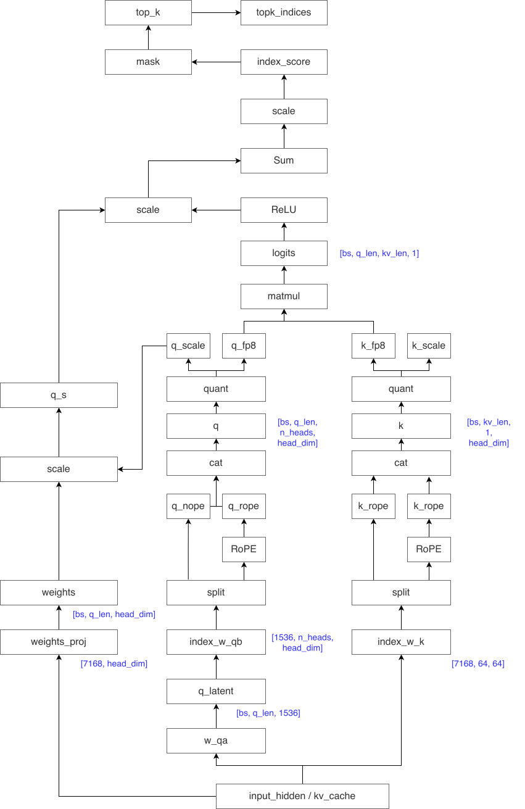

Indexer
Indexer 在结构上类似一个极简的 attention
前半段：它使用少量 head 的低维 \(QK^T\) 计算 query–key
的相关性分数，但不进行 softmax，也不计算 value 聚合。
其输出是一个索引分数，用于评估每个 query token 与历史 token
的相关性，从而筛选出需要进入真实 attention 计算的候选
token。
其中，不同 head 的相关性分数通过由 query token 自适应生成的 gating 权重进行加权融合。
\[ I_{t,s} = \sum_{j=1}^{H^l} w_{t,j}^l \cdot ReLU(q_{t,j}^l \cdot k_s^l) \]
其中：
- \(H^l\)：索引器头数（数量少，保证轻量化）；
- \(w_{t,j}^l\)：由当前查询 token \(h_t\) 生成的权重；
- \(q_{t,j}^l / k_s^l\)：分别由查询 token、前文 token 生成的查询向量与键向量；
- \(ReLU\)：激活函数。
Shape
- \(W Q^{T}\):
[bs, q_len, kv_len, n_heads, 1] - weight proj:
[bs, n_heads] - index score:
[bs, q_len, kv_len]

\[ \begin{aligned} q_{\text{fp8}} &: (Q, H, d) \quad \text{多头 query} \\ k_{\text{fp8}} &: (K, d) \quad \text{单头 key (MQA)} \\ \text{weights} &: (Q, H) \quad \text{per-head gate} \\ \\ \text{GEMM} &: (Q \times H, d) \; @ \; (K, d)^T \rightarrow (Q \times H, K) \quad \text{per-head dot products} \\ \text{ReLU} &: (Q \times H, K) \quad \text{截断负值} \\ \times \text{weight} &: (Q \times H, K) \quad \text{乘 per-head gate} \\ \Sigma_h &: (Q \times H, K) \rightarrow (Q, K) \quad \text{跨 head 求和（reduce sum）} \\ \times k_{\text{scale}} &: (Q, K) \quad \text{乘 KV 的 FP8 反量化 scale} \\ \\ \text{输出} &: \text{logits} \; (Q, K) \; \text{float32} \end{aligned} \]
Scale
weights_proj 用来从 hidden state 预测每个 head 对 block 选择的 重要性权重。这是一个 可学习的参数，在训练中优化。
def _get_logits_head_gate(self, x, q_scale):
weights, _ = self.weights_proj(x) # (seq_len, n_heads)
weights = weights.float()
weights = weights * self.n_heads**-0.5 # scale by 1/√H
weights = weights.unsqueeze(-1) * q_scale * self.softmax_scale
# ^(seq_len, n_heads, 1) ^FP8量化scale ^1/√d
return weights\[ \begin{aligned} \text{logit}[q, k] &= \sum_h \left( \text{weight}[q, h] \times \mathbf{q\_fp8}[q, h, :] \cdot \mathbf{k\_fp8}[k, :] \right) \times k\_scale[k] \\ &= \sum_h \left( \frac{g[q,h]}{\sqrt{H}} \times q\_scale[q,h] \times \frac{1}{\sqrt{d}} \times \mathbf{q\_fp8}[q,h] \cdot \mathbf{k\_fp8}[k] \times k\_scale[k] \right) \\ &= \sum_h \left( \frac{g[q,h]}{\sqrt{H}} \times \frac{\mathbf{q}[q,h] \cdot \mathbf{k}[k]}{\sqrt{d}} \right) \\ &= \sum_h \left( \frac{g[q,h]}{\sqrt{H}} \times \text{attn\_logit\_h}[q,k] \right) \end{aligned} \]
TopK
theory
kv cache
Indexer 有独立的 KV
cache（index_k_with_scale_buffer），和
MLA 主 KV cache 是分开的。
每个 token 每层存储的是 indexer 的 key： - head 数 = 1（MQA 风格，只有一个 key head） - head_dim = 128
代码中有明确 assert：
# memory_pool.py:1772-1773
# num head == 1 and head dim == 128 for index_k in NSA
assert index_head_dim == 128存储数据类型：FP8 + FP32 scale
存储类型是 torch.uint8（即
FP8 映射到 uint8），加上 per-block FP32 量化 scale：
# memory_pool.py:1732
index_k_with_scale_buffer_dtype = torch.uint8然后 block size 是 128，也就是 128 个数据单元共用一个 fp32 4 字节的 scale。
对比 MLA 主 KV cache
| Indexer KV cache | MLA 主 KV cache (bf16) | MLA 主 KV cache (fp8) | |
|---|---|---|---|
| 存什么 | indexer key（hadamard 旋转后） | \(k\_\text{nope} + k\_\text{rope}\)（latent） | \(k\_\text{nope\_fp8} + \text{scale} + k\_\text{rope\_bf16}\) |
| 维度 | 128 (\(1\ \text{head} \times 128\ \text{dim}\)) | 576 (\(512 + 64\)) | 656 (\(512 + 16 + 128\)) |
| 数据类型 | fp8 + fp32 scale | bf16 | fp8 + fp32 scale + bf16 rope |
| 每 token 每层 | 132 bytes | 1152 bytes | 656 bytes |
| 独立 buffer | index_k_with_scale_buffer |
kv_buffer |
kv_buffer |
总显存开销
每个 token 每层的 总 KV cache = MLA 主 cache + indexer cache： - bf16 模式：\[1152 + 132 = \mathbf{1284\ bytes/token/layer}\] - fp8 模式：\[656 + 132 = \mathbf{788\ bytes/token/layer}\]
常用经验值：
- 在 dense 的 mla 路径中，一个 token 61 层总共需要 \(70\text{kb}\) 左右的显存。
- 在 sparse 的 mla 路径中，一个 token 61 层的 mla latent cahce 总共需要 \(40\text{kb}\) 左右的显存。
- 在 sparse 的 mla 路径中，一个 token 61 层 mla latent cahce + index k cache 总共需要 \(48\text{kb}\) 左右的显存。
decode flops
如果不使用稀疏注意力，attention 计算量在 decode 阶段线性增长为 \(2BTSNH\)
其中： - \(B\): batch size - \(T\): q_len - \(S\): kv_len - \(N\): number of q heads - \(H\): head dim
实现 DSA 之后，当 kv_len 长度超过 2048 的时候，稀疏注意力部分的计算量就不再增长了，但是 indexer 阶段的注意力还是线性增长的，不过这个斜率比较小，因为 \(N=64, H=64\)，这个参数还是比较小的。
假设 window_size 为 \(W = 2048\)，那么 decode 阶段 dsa 每个 step 计算量为：
$4BT min(S, W) NH)
TP vs CP
如果采用 TP，indexer 阶段不按照 TP 切分
如果采用 TP，不能切 indexer 的 mqa 过程，因为后续有一个按照不同 head sum 的过程，如果按照 TP 进行切分的话，需要有一个 AllReduce 通信，而这个通信量是大于 CP 切分的 index kv all gather 的。
同样，对于 sparse mqa + o_proj 的 TP 切分导致的 all reduce 通信量也大于 kv all gather 的通信量。
- indexer
- CP
通信量：
T / cp_size * index_v_hdim，数据量为 \(O(T)\) - TP
通信量：
T * T / tp_size * (tp_size - 1) * 2 * sizeof(float32)，数据量为 \(O(T^2)\)
- CP
通信量：
- sparse mqa
- CP 通信量：
T / cp_size * 576 - TP
通信量：
T / tp_size * (tp_size - 1) * 7168 * 2
- CP 通信量：
两种模式下都是 CP 的通信量小于 TP。
再对比一下 sparse mqa 模式的 TP 和 CP
| 维度 | TP（切 head） | CP（切序列） |
|---|---|---|
| Indexer 计算量 | 不减少（每个 rank 处理全部 token） | 线性缩减（只处理局部 token） |
| QKV Proj 计算量 | 按 head 数缩减 | 按 token 数缩减 |
| Attention 计算量 | Q head 数缩减，KV 长度不变 | Q 长度缩减，KV 通过 AllGather 完整 |
| 通信 | O proj 的 all-reduce（大） | 压缩 KV 的 AllGather（小，因为 MLA） |
DSA + CP
AllGather CP
Ring Attention vs AllGather CP
| Ring Attention | SGLang 这里的 CP | |
|---|---|---|
| 通信方式 | P2P send/recv，KV 绕环传递 | AllGather 一次收集所有 KV |
| 通信轮次 | CP=8 需要 7 轮 | 1 轮 AllGather |
| 每轮计算 | 每轮用当前 KV chunk 做部分 attention | 收齐后做完整 attention |
| overlap | 第 i 轮计算与第 i+1 轮传输重叠 | AllGather 与其他计算重叠 |
为什么能用 AllGather？关键在于 MLA
DeepSeek V3 使用 MLA（Multi-head Latent Attention），KV
cache 是高度压缩的——每个 token 的 KV 只有
kv_lora_rank + qk_rope_head_dim（约 512+64=576
维），而不是传统 MHA 的
num_heads * head_dim（128*128=16384 维）。
KV cache 体积小了约 28 倍，使得 AllGather 整段 KV 的通信量可以接受。
Q Split
zig-zag
先切成 cp_size * 2 块，然后交叉配对：
# nsa/utils.py:499-516
cp_segment_num = cp_size * 2 # = 8
# zigzag_index: 每个rank拿一个靠前的block + 一个靠后的block
zigzag_index = [cp_rank, ...(前)] + [cp_segment_num - cp_rank - 1, ...(后)]结果：
block: b0 b1 b2 b3 b4 b5 b6 b7
↓ ↓ ↓ ↓ ↓ ↓ ↓ ↓
rank0: b0 + b7 (最前 + 最后)
rank1: b1 + b6
rank2: b2 + b5
rank3: b3 + b4 (中间两块)每个 rank 的计算量（N=8000, 每块 1000 token）：
rank0: b0(Q attend 0~999, avg_kv≈500) + b7(Q attend 7000~7999, avg_kv≈7500)
= 1000*500 + 1000*7500 = 8M
rank1: b1(avg_kv≈1500) + b6(avg_kv≈6500)
= 1000*1500 + 1000*6500 = 8M
rank2: b2(avg_kv≈2500) + b5(avg_kv≈5500)
= 1000*2500 + 1000*5500 = 8M
rank3: b3(avg_kv≈3500) + b4(avg_kv≈4500)
= 1000*3500 + 1000*4500 = 8M每个 rank 的计算量完全一致——因为配对的两个 block 的平均
KV 长度之和总是 (i + (N-i)) = N。
round-robin
按 token 逐个分配：
# token_idx % cp_size 分配
rank0: token0, token4, token8, token12, ...
rank1: token1, token5, token9, token13, ...
rank2: token2, token6, token10, token14, ...
rank3: token3, token7, token11, token15, ...这种方式更彻底——每个 rank 的 token 均匀散布在整个序列中，天然负载均衡。代价是后续需要更复杂的 index 重组。
Workflow
以 CP=4, in-seq-split 为例
Step 1: 切分输入
代码位置:
deepseek_v2.py:2685-2688
假设总序列长 8000 tokens，先切成
cp_size*2 = 8 块，再 zigzag 分配：
原始: block0 | block1 | block2 | block3 | block4 | block5 | block6 | block7
↓ zigzag 重排
rank0: block0, block7 (头+尾, 平衡 causal mask 计算量)
rank1: block1, block6
rank2: block2, block5
rank3: block3, block4每个 rank 只处理约 1/4 的 token，各自独立过 embedding → layernorm → QKV projection。
Step 2: AllGather KV Cache
代码位置:
deepseek_v2.py:1731-1735
这是关键步骤。在 forward_absorb_prepare
中，每个 rank 计算出自己那部分 token 的
latent_cache（k_nope + k_pe），然后：
def rebuild_cp_kv_cache(self, latent_cache, forward_batch, k_nope, k_pe):
# 把 k_nope 和 k_pe 打包成 latent_cache
latent_cache[..., :self.kv_lora_rank] = k_nope.squeeze(1)
latent_cache[..., self.kv_lora_rank:] = k_pe.squeeze(1)
# 一次 AllGather：每个 rank 的局部 KV → 所有 rank 拿到完整 KV
latent_cache_output = cp_all_gather_rerange_output(
latent_cache.contiguous(), self.cp_size, forward_batch, stream)
# 拆回 k_nope, k_pe
k_nope = latent_cache_output[..., :self.kv_lora_rank].unsqueeze(1)
k_pe = latent_cache_output[..., self.kv_lora_rank:].unsqueeze(1)
return k_nope, k_peAllGather 之后，每个 rank 都拥有完整的 8000 个 token 的 KV cache。
Step 3: 本地做完整的 Causal Attention
每个 rank 拿自己的 Q（只有 ~2000 tokens）和完整的 KV（8000 tokens）做 attention。因为是 causal mask，所以： - rank0 的 Q 对应 block0 和 block7 的位置，只需要 attend 到各自因果范围内的 KV - 各 rank 独立计算，不需要多轮迭代
Step 4: AllGather 最终输出
代码位置:
deepseek_v2.py:2768-2775
最后一层结束后，各 rank 的 hidden_states（各约 1/4）再 AllGather + rerange 拼回完整序列。
KV AllGather
代码位置:
nsa/utils.py:291-332
def cp_attn_tp_all_gather_reorganazied_into_tensor(...):
# Step 1: pad 到统一长度（AllGather 要求各 rank shape 相同）
max_len = (total_len + attn_tp_size - 1) // attn_tp_size
input_ = F.pad(input_, ...)
# Step 2: 异步 AllGather（用 pynccl 避免 event 同步开销）
get_attention_cp_group().cp_all_gather_into_tensor_async(
input_tensor_all, input_, stream_op)
# Step 3: 去掉 padding，按 zigzag 逆序重排回原始顺序
outputs = torch.cat([...去padding拼接...])Overlap
不是在 attention kernel 内部，而是：
- AllGather KV 与 Q projection
计算重叠：AllGather
是异步发起的（
cp_all_gather_into_tensor_async），Q 的投影计算可以同时进行 - 层间通信与 MLP
计算重叠：
NSACPCommunicator在 attention→MLP 转换时做 allgather/reduce_scatter，与 layernorm 等计算重叠
总结
Ring Attention (传统方案):
for round in 0..CP-1:
send_recv(kv_chunk) ← P2P 通信
partial_attn(q, kv_chunk) ← 与通信 overlap
reduce(partial_results)
SGLang 这里的 AllGather CP:
each rank: compute local KV from local tokens
AllGather(all KV) ← 一次通信，拿到完整 KV
each rank: full_attn(local_Q, full_KV) ← 本地完整计算
AllGather(output) ← 拼回完整输出Prefill DSA vs MHA
在 prefill 使用 sparse mla 的判断逻辑：
self.use_mha = (
device_sm in [90, 100..109]
and max_kv_len <= self.nsa_index_topk # 条件 1: 最长序列 ≤ 2048
and dtype in [bf16, fp8_e4m3]
and sum_seq_lens <= max_chunk_capacity # 条件 2: 总 token 数能放进 chunk
and not CP
)V3.2 非 trtllm backend 下，当 batch 中最长请求的完整上下文长度 ≤ 2048 且总 token 数能装进一个 chunk 时，走 MHA；否则走 sparse MLA。
这个设计的核心逻辑是：当 sparse 等于 dense 时，跳过 sparse 的开销，直接做 dense attention。
为什么阈值是 index_topk = 2048
NSA indexer 从所有 KV token 中选 top-2048 个 block 做 sparse attention。如果总 KV 长度本身就 ≤ 2048，那 top-2048 会选中全部 token，sparse = dense。此时可以节省掉 indexer 的开销，并且本身 MHA 的效率也不低于 sparse MQA。
由于 MQA 的计算量是 MHA 的三倍，所以 6k 的场景下都是 MHA > 2k sparse MQA + indexer
为什么要检查
sum_seq_lens ≤ max_chunk_capacity
MHA_ONE_SHOT 把整个 batch 的 Q 和 KV 一次性放入一个 kernel 调用。这要求所有数据能装进显存中的一块连续工作区（chunk）。如果 batch 中虽然每条请求都短（≤ 2048），但请求数量很多，总 token 数可能超出 chunk 容量。这时候无法 one-shot，只能退回 sparse MLA（sparse MLA 走 paged KV cache，没有这个限制）。
seq_len ≤ 2048 且 batch 装得下 → MHA（省 indexer 开销，sparse 无意义）
seq_len > 2048 → sparse MLA（indexer 选出 2048 个 block，真正稀疏）
seq_len ≤ 2048 但 batch 太大 → sparse MLA（MHA one-shot 放不下，退回 paged 路径）